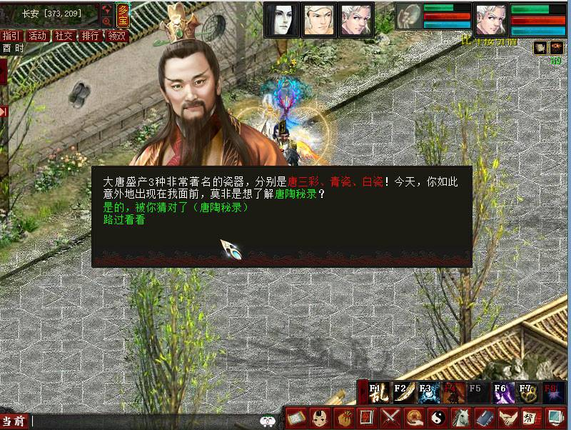
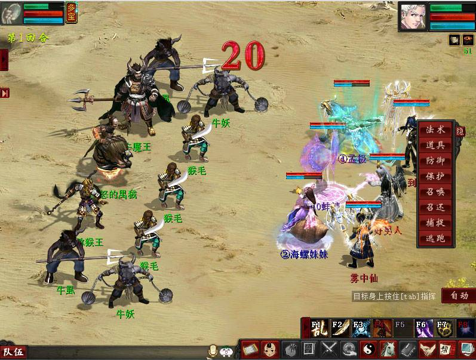
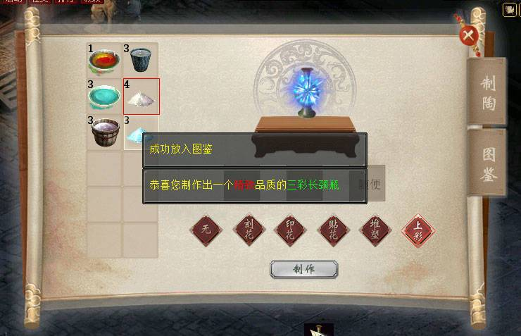
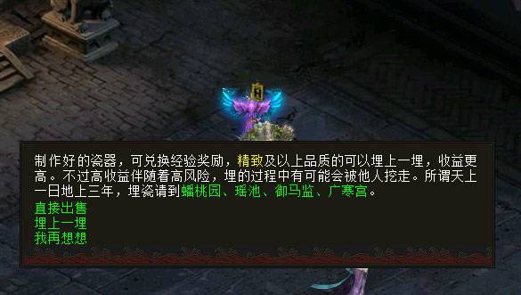

玩法介绍：我大唐盛产三种非常著名的瓷器，分别是唐三彩、青瓷、白瓷，找到唐艺老人领取任务，了解这3种瓷器的制作方法。
活动时间：7月21日00点-7月22日24点
参与条件：≥0转50级且3人以上组队
活动NPC：唐艺老人（长安城369,211）
1、三人以上组队至长安城369,211找唐艺老人领取任务，任务共有3环，每完成一环获得一种瓷器的制作工艺方法，获得的工艺方法将记录在陶艺新风玩法的任务栏中。
2、每环任务过程中会遇到5个小怪，找到对应的NPC对话即可完成该环任务。
3、每天共能完成3环不同的任务，共获得3种瓷器制作工艺方法。
4、任务过程中，将获得制作瓷器的原材料，用于陶艺新风玩法中瓷器的合成。
玩法介绍：不知哪里的小道消息传出将有异宝现世，最近长安附近地区突然多了大批挖宝之人，惊扰了不少孤魂野鬼，也挖塌了不少妖怪的洞穴，致其无家可归到处闹事，少侠赶紧去超度它们吧！
活动时间：7月21日00点-7月22日24点
参与条件：≥0转50级且3人以上组队
1、三人以上组队，根据任务栏中的超链接，找到郁闷的树妖、无奈的妖蝎、生气的黑熊精、愤怒的狮虎兽、暴怒的禺狨，将他们击败收复即可完成任务。
2、愤怒的狮虎兽、暴怒的禺狨有简单、困难2种难度模式选择。
3、成功击败以上BOSS有几率获得古瓷兑换券、考古铁铲，其中古瓷兑换券可在长安城309,183古玩店掌柜处兑换未鉴定古瓷，用于古玩新拍玩法。
玩法介绍：完成唐陶秘录任务得到的原材料和工艺方法，可打开陶艺新风制陶界面制作唐代三种著名的瓷器。
活动时间：7月21日00点-7月22日24点
参与条件：≥0转50级且单人
1、根据完成唐陶秘录任务得到的原材料和工艺方法，在界面中可制作出青瓷、白瓷、唐三彩这三种具有代表性的作品，共15个。
2、放入正确的材料和选择正确的技法，即能做出对应的种类的瓷器，每个种类的瓷器有5种，要想收集齐全，有一定的随机性。
3、制作出来的瓷器，分普通、精致、珍稀、传世4种品质，品质有一定的随机性，不同的品质，获得的奖励不同。
4、在图鉴页中，收集满每一个种类的瓷器5个，可获得一次奖励；收集满三个种类的瓷器15个，可获得一次奖励，收集奖励活动期间只能获得1次。
玩法介绍：制作好的瓷器，可直接右键出售，获得奖励；精致品质以上的，可以埋于地下，让收益增值。
活动时间：7月21日00点-7月22日24点
参与条件：≥0转50级且单人
1、埋瓷后，瓷器消失，需在此界面领取奖励。
2、奖励可随时领取，超过1小时有奖励加成，满4小时奖励达上限，可获得物品奖励。
3、同时最多只能存在5个埋瓷状态的瓷器。
4、高收益伴随着高风险，埋瓷过程中有可能会被他人挖走，请谨慎操作。
玩法介绍：昨晚天生异象，据小道消息，将有巨宝献世！为了满足子民们挖宝的欲望，每天完成寻宝度妖BOSS挑战有几率获得考古铁铲。
活动时间：7月21日00点-7月22日24点
参与条件：≥0转50级且单人
1、除了活动中获得，每天可额外在长安城309,183古玩店掌柜处购买20个考古铁铲。
2、挖宝有几率挖到前人留下的古瓷、他人埋下的古瓷、凝魂珠（大）、凝魂珠（中）、黄宝石、八荒遗风等珍稀道具。
3、若挖到他人埋下的古瓷，你可以选择拿走，或者帮他人埋得更深一些，缩短埋瓷的时间。
玩法介绍：长安城最近出现了一位古怪的古玩店掌柜，正在举办古董拍卖会，吸引了不少吃瓜群众。只要在他处购买未鉴定的古瓷，参与拍卖，很可能将古瓷卖出一个极高的价格！
活动时间：7月21日00点-7月22日24点
参与条件：≥0转50级且单人
活动NPC：古玩店掌柜（长安城309,183）
1、寻宝度妖玩法中获得的古瓷兑换券可在古玩店掌柜处兑换未鉴定的古瓷，也可以直接花钱购买，每天最多可以兑换50个。
2、身上拥有未鉴定的古瓷方可参与拍卖玩法。
3、右键使用未鉴定的古瓷即可打开拍卖界面。
4、从12个NPC中选择一名作为首拍人，即可开始拍卖。
5、拍卖过程中，将有1-12次不等的出价，出价次数越多，最后获得的银两收益越高。
6、拍卖完毕后，可直接选择拿走拍卖所得的银两，也可以选择通过“呼唤专家”来使收益产生变化，具体收益变化如下：
| 鉴宝专家 | 6.1-10倍内随机 |
| 古董收藏家 | 2.1-6倍随机 |
| 古董商人 | 1.1-2倍随机 |
| 江湖奸商 | 收益不变 |
| 强盗 | 收益变0 |